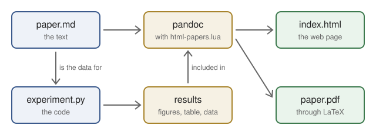
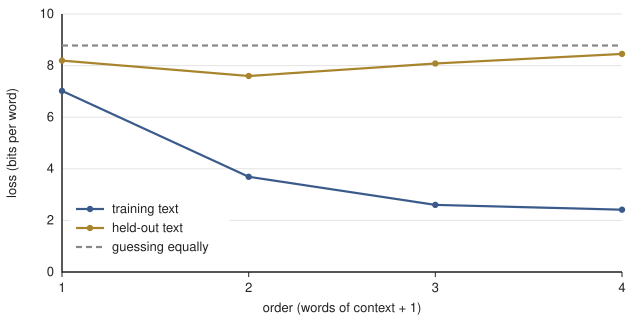
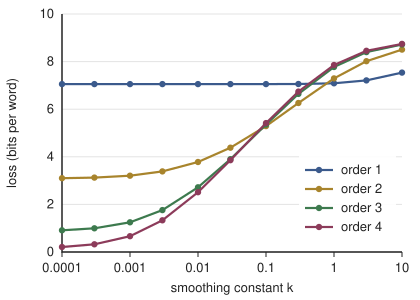
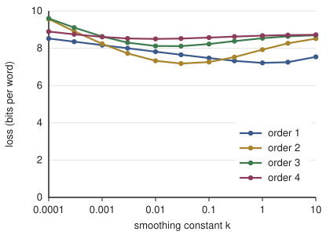
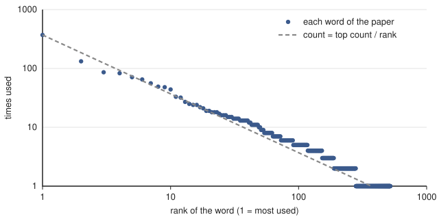

November 2026
One markdown file, built as a web
page and as a
PDF
Source: paper.md,
built by build.sh
with html-papers
A paper is usually written twice: once as text, and once as the code that produced what the text reports. This paper is written once. It is one markdown file, and building it runs its experiment, draws its charts, fills its table and prints the code of the experiment. The same build gives a web page and a PDF with the same numbering and references.
The experiment is a small one: word-counting language models fitted to the text of this paper, scored on the sentences they were not shown. Its results change when the text does, and the build keeps the two in step.
On the web page, a link shows what it points to when the pointer rests on it, or on a tap. Press E to comment. The contents are the column at the left.
A paper has two parts that are kept in different places. One is the text. The other is the scripts and notebooks that produced the numbers and figures in the text. The two drift apart: a figure is redrawn and the sentence about it is not, or the code that made a table can no longer be found. For programs, Knuth proposed writing the explanation and the code as one document, in the order that suits the reader [3]. This paper does the same for a paper, and it is its own example.
The file you are reading was built from one markdown file. The build ran an experiment, and the results of that experiment are the ones reported here. The experiment is small on purpose. We fit n-gram models to the text of this paper and measure how well they predict the sentences they were not shown.1 Nothing in it is new [6, 7]. It is here because it needs everything a paper needs: definitions, equations, a table, figures, code and references.
The paper makes three points, each by doing it:
The source is paper.md, written in the markdown that
pandoc reads [4]. Figure
1, the one figure here that is drawn by hand, shows the build. First
the experiment runs. It reads the text of the paper and writes the
charts, the table and the numbers behind the live figures. Then pandoc
reads paper.md twice, once to write the web page and once
to write LaTeX, which becomes the PDF. Both times pandoc runs the
filter, which turns each construct of the paper into what that
output needs. A cross-reference becomes a numbered link on the page and
stays a reference in LaTeX. A term becomes a link that carries its
definition on the page and a tooltip in the PDF.

The script that does this is short enough to print. Figure 2 is not a copy of it. The build includes the file, so the script you read is the script that ran.
#!/usr/bin/env bash
# Build this paper in the folder it is in: ./build.sh [html|pdf|all]
# html the web page, index.html (a few seconds)
# pdf paper.pdf (LaTeX, biber, inkscape)
# The html-papers scripts and stylesheets must be beside it (`make demo-html-papers` copies
# them), and pandoc-utils two folders up or at $PANDOC_UTILS.
set -euo pipefail
here="$(cd "$(dirname "${BASH_SOURCE[0]}")" && pwd)"
PANDOC_UTILS="$(cd "${PANDOC_UTILS:-$here/../..}" && pwd)"
cd "$here"
what="${1:-all}"
case "$what" in html | pdf | all) ;; *) echo "usage: build.sh [html|pdf|all]" >&2; exit 2 ;; esac
run() { uv run --project "$PANDOC_UTILS" "$@"; }
if [[ ! -f popups.js || ! -f html-papers.css ]]; then
echo "build.sh: copy $PANDOC_UTILS/html-papers/{*.js,*.css,numeric.csl} to $PWD first" >&2
exit 1
fi
# 1. The experiment: reads paper.md, writes figures/, generated/ and live/data.js.
run python -B experiment.py
# 2. The web page. The front matter's __defaults__ block names the filters and the terms file.
if [[ $what == html || $what == all ]]; then
run "$PANDOC_UTILS/markdown_get_defaults_yaml.py" paper.md \
--defaults-file _pandoc_defaults.paper.yml
run pandoc paper.md --defaults _pandoc_defaults.paper.yml \
--from markdown+footnotes+inline_notes --to html5 --standalone \
--citeproc --mathml --css html-papers.css --css paper.css --output index.html
fi
# 3. The PDF, from the same file. SOURCE_DATE_EPOCH keeps today's date out of it, so the
# PDF changes only when the paper does.
if [[ $what == pdf || $what == all ]]; then
SOURCE_DATE_EPOCH=1 bash "$PANDOC_UTILS/pandoc_md_pdf.sh" paper.md
fibuild.sh, included from the
folder it built. A captioned block of anything is a numbered
figure.The settings are in the front matter of paper.md: the
bibliography, the filters to run and the file of terms. Besides its
figures and the pages behind its live figures, the finished page needs
five scripts and two stylesheets, and nothing else. It needs no server,
and it loads nothing from the network. Its equations are MathML, which a
browser draws on its own.
Most of the source is plain markdown and reads like the text. This section shows the constructs that are not plain markdown, each beside its source.
A heading, a figure or a table is given an id, and
\autoref refers to it:
## Cross-references {#sec:refs}
See \autoref{sec:model}, \autoref{fig:loss} and \autoref{tab:loss}.This gives: see Section 4.2, Figure 4 and Table 1. The reference becomes the number of its target in both outputs, also when the target comes later in the text. On the web page, hovering the link shows a copy of the target in the margin, so a reader who wants to check a figure does not lose their place. A figure in a copy is made smaller until it fits, so a copy of a figure never has to be scrolled. A link inside a copy opens another copy below it. Clicking a copy keeps it open. A reference to an id that does not exist still builds. On the web page it shows in red, and the build warns. In the PDF it is the pair of question marks that LaTeX prints.
A paper names things, and a reader who skipped the definition is lost. Here a term is defined once, in a file of terms that begins:
terms:
loss:
text: loss
def: How surprised a model is by a text, in bits per word. Lower is better.
target: sec:lossWriting \term{loss} in the text then gives loss.
The word is a link to the section that defines it, and the definition
shows in the margin when the pointer is on the word. In the PDF it is a
tooltip. Writing \term[losses]{loss} shows other words for
the same term. A name that is not in the file stops the build and says
which name it was.
Citations are the ones pandoc has. Writing
[@knuth1984literate] gives [3], and two keys in one bracket give
[5, 8]. On
the web page a citation shows its references in the margin. In the list
of references a title that has a web address is a link, and so is an
arXiv number. Footnotes show in the margin in the same way.2 Equations are written as in LaTeX,
as in Section 4.3. A note from the author to the
author is hard to miss in both outputs: [TODO: take
this out before the paper is sent]
The data is this paper. The experiment reads paper.md
and keeps the prose as words in lower case, with a mark at the end of
each sentence. It drops the code, the equations and the citations. A
caption keeps its words, and a term counts as the words it shows. Every
fifth sentence is set aside as the held-out
text. The other sentences are the training
text. The models count only the training text. Because the text is
the data, changing a sentence of this paper changes its results, and the
next build reports the new ones.
An n-gram model of order predicts a word from the words before it. It counts how often each word followed those words in the training text [6]. A word that never followed them would get a probability of zero, and then one new sentence would be impossible. So the model counts every word more times than it was seen, which is called smoothing [2]:
Here is the context, the words before the word , and is the number of different words. Figure 3 is the whole model. It is the file that the experiment imports.
"""An n-gram word model with add-k smoothing. This is the whole model."""
import math
from collections import Counter
START: str = "<s>" # stands in for the words before the first one
UNKNOWN: str = "<unk>" # stands in for any word the model never counted
Gram = tuple[str, ...] # a context and the word after it
class NGram:
"""Predicts each word from the `order - 1` words before it, by counting."""
def __init__(self, order: int, k: float, words: list[str]) -> None:
self.order: int = order
self.k: float = k
self.vocabulary: set[str] = set(words) | {UNKNOWN}
self.count: Counter[Gram] = Counter() # context and word -> times seen
self.context: Counter[Gram] = Counter() # context -> times seen
for gram in self.grams(words):
self.count[gram] += 1
self.context[gram[:-1]] += 1
def grams(self, words: list[str]) -> list[Gram]:
"""Each word with the words before it; words never counted become UNKNOWN."""
known: list[str] = [w if w in self.vocabulary else UNKNOWN for w in words]
padded: list[str] = [START] * (self.order - 1) + known
return [tuple(padded[i : i + self.order]) for i in range(len(words))]
def probability(self, gram: Gram) -> float:
"""Add-k smoothing: every word is counted k more times than it was seen."""
seen: float = self.count[gram] + self.k
return seen / (self.context[gram[:-1]] + self.k * len(self.vocabulary))
def loss(self, words: list[str]) -> float:
"""Cross-entropy in bits per word: lower is a better prediction."""
bits: float = math.fsum(
math.log2(self.probability(g)) for g in self.grams(words)
)
return -bits / len(words)
def continuation(self, prompt: list[str], length: int) -> list[str]:
"""The likeliest next word (ties: first in the alphabet), up to `length` times.
Stops early when the last `order - 1` words were never seen together.
"""
words: list[str] = list(prompt)
for _ in range(length):
context: Gram = self.grams(words + [UNKNOWN])[-1][:-1]
if self.order > 1 and self.context[context] == 0:
break
options: list[str] = sorted(self.vocabulary - {UNKNOWN})
words.append(max(options, key=lambda w: self.count[context + (w,)]))
return words[len(prompt) :]model.py: the model, its loss
and how it continues a text.A model is scored on a text by its loss, the cross-entropy in bits per word [7]:
A model that gave each of the words the same probability would have a loss of on any text. A model has learned something when its loss on the held-out text is below that.
The build writes everything in this section except the prose. The prose makes claims about the numbers, and the experiment checks each claim before it writes anything (Section 8.1). If a change to the text makes a claim false, the build stops.
Table 1 gives the loss of each model, at one smoothing constant. There, on the training text, a higher order is always better. On the held-out text it is not. One word of context helps, so the model of order 2 is the best. Each word of context after that makes the model worse, and the model of order 4 is hardly better than guessing every word equally. The last column of the table says why. The longer the context, the less often the model has seen it, and a model that has not seen the context knows nothing about the next word.
| order | training text | held-out text | contexts seen in training |
|---|---|---|---|
| words | 2,037 | 461 | |
| 1 | 7.02 | 8.19 | 100% |
| 2 | 3.69 | 7.59 | 86% |
| 3 | 2.60 | 8.08 | 43% |
| 4 | 2.41 | 8.45*Hardly better than guessing equally among the 439 things a model can predict (its words, the end of a sentence and a stand-in for any other word), which costs 8.78 bits. | 15% |
The markdown of the table has two things that a plain table does not. A row whose first cell is bold joins the header, which is where the word counts are. A footnote in a cell shows as an asterisk on the web page, and its note shows in the margin while the pointer is anywhere in the cell.
Figure 4 draws the same numbers. On the web page the figure is a picture until it is clicked. Then it is a small live page with a slider for the smoothing constant, and nothing is loaded before the click. Moving the slider shows that the best order on the held-out text is not the same at every constant.

How much smoothing is best depends on which text is asked about (Figure 5). On the training text less is always better (Figure 5a), because every count given to a word that did not come is taken from a word that did. With almost none, the model of order 4 has a loss close to zero there: it has memorised the paper. On the held-out text the least smoothing is never the best (Figure 5b). From order 2 up, the constant matters less as the order goes up, because in a context the model has not seen, every word gets the same probability whatever the constant is.


A model can also write. Give it some words, take the word it finds most likely, and repeat. Figure 6 starts every model with the same three words, the run of three words that is most common in the training text. The first row is how the paper goes on from there. The model of order 1 does not look at the prompt, and repeats the most common word. The models of higher order can only say what they have counted, so what they write is made of pieces of the paper.
Figure 7 counts how often each word of the paper is used. As in most text, a few words are used very often and most words only once or twice [9]. Here the ten most used words are more than a fifth of the text. The page that lists every word with its count is too long to put inside a figure. So this figure stays a picture, with a link to that page under it.

A draft gets comments. On the web page, pressing E turns on review mode. The reader selects some text and comments on it. The reader can also switch to suggesting, and then type into the text, which marks the change and leaves the text as it was. Nothing is sent anywhere. The comments stay in the browser of the reader until the reader exports them as a file and sends the file to the author.
The author puts the files in a folder and runs one command:
uv run html-papers/collect_reviews.py reviews/ --md paper.md -o reviews/merged.jsonThe command merges the files and keeps the newest version of each
comment. It lists every comment with the line of paper.md
that the comment is about, which it finds from the words the reader
selected. So a comment made on the page leads to the line to change. The
merged file can be loaded back into the page, to read all the comments
in place.
This is experiment.py, included from the file. It
imports the model of Figure 3 and a small
module that draws the charts, svgplot.py, which is beside
the page and is not printed here. The claims that the prose of Section 5 makes are the lines that begin with
assert.
"""The paper's experiment: n-gram models of the paper's own text.
build.sh runs this before pandoc. It reads paper.md and terms.yaml, checks what the paper
says about the results, and only then writes what the paper shows of them: the table
(generated/results.md), the continuations (generated/continuations.json), the figures
(figures/*.svg) and the numbers behind the live figures (live/data.js). Standard library
only, and no randomness: the same paper.md always gives the same files.
"""
import json
import math
import re
from collections import Counter
from pathlib import Path
from model import NGram
from svgplot import Chart, Series, write
HERE: Path = Path(__file__).parent
ORDERS: list[int] = [1, 2, 3, 4]
K: float = 0.01 # the smoothing constant of the table and the first figure
KS: list[float] = [0.0001, 0.0003, 0.001, 0.003, 0.01, 0.03, 0.1, 0.3, 1.0, 3.0, 10.0]
HELD_OUT_EVERY: int = 5 # every fifth sentence is held out
CONTINUE: int = 14 # words each model adds to the prompt
END: str = "." # the end of a sentence, counted as a word
def term_texts(yaml: str) -> dict[str, str]:
"""Each term's name and the words it shows, from terms.yaml."""
return dict(re.findall(r"^ (\w+):\n text: (.+)$", yaml, flags=re.MULTILINE))
def words_of(markdown: str, terms: dict[str, str]) -> list[str]:
"""The paper's prose as lowercase words, with END for the end of a sentence.
Out go the front matter, code, equations, citations, footnote marks, attributes, and the
addresses of links and images. A caption or a link keeps its words, and a term the words
it shows.
"""
if not markdown.startswith("---\n") or "\n---\n" not in markdown:
raise SystemExit("experiment: paper.md has no front matter to leave out")
text: str = markdown.split("\n---\n", 1)[1]
text = re.sub(r"```.*?```|\$\$.*?\$\$", " ", text, flags=re.DOTALL) # blocks
text = re.sub(r"`[^`\n]*`|\$[^$\n]*\$", " ", text) # inline code and math
text = re.sub(r"!?\[([^\]\[]*)\]\([^)]*\)", r"\1", text) # link, image: its words
text = re.sub(r"\[[\^@][^\]]*\]:?", " ", text) # citations, footnote marks
text = re.sub(r"\\term\[([^\]]*)\]\{[^}]*\}", r"\1", text)
text = re.sub(r"\\term\{([^}]*)\}", lambda m: terms[m[1]], text)
text = re.sub(r"\\[A-Za-z]+(\{[^}]*\})?|\{[^}]*\}|https?://\S+", " ", text)
return re.findall(r"[a-z]+(?:[-'][a-z]+)*|\.", text.lower())
def split(words: list[str]) -> tuple[list[str], list[str]]:
"""Training text and held-out text: every fifth sentence goes to the second."""
sentences: list[list[str]] = [[]]
for word in words:
sentences[-1].append(word)
if word == END:
sentences.append([])
train: list[str] = []
held_out: list[str] = []
for i, sentence in enumerate(sentences):
(held_out if i % HELD_OUT_EVERY == HELD_OUT_EVERY - 1 else train).extend(
sentence
)
if not train or not held_out:
raise SystemExit(
f"experiment: paper.md needs at least {HELD_OUT_EVERY} sentences"
)
return train, held_out
def seen_share(model: NGram, words: list[str]) -> float:
"""The share of `words` whose context the model counted at least once."""
grams = model.grams(words)
return sum(model.context[g[:-1]] > 0 for g in grams) / len(grams)
def common_phrase(words: list[str], length: int) -> list[str]:
"""The most frequent run of `length` words within a sentence (ties: alphabetical)."""
runs: Counter[tuple[str, ...]] = Counter(
tuple(words[i : i + length]) for i in range(len(words) - length + 1)
)
best = max(sorted(runs), key=lambda run: ((END not in run), runs[run]))
return list(best)
def main() -> None:
terms: dict[str, str] = term_texts((HERE / "terms.yaml").read_text())
words: list[str] = words_of((HERE / "paper.md").read_text(), terms)
train, held_out = split(words)
# ------------------------------------------------------------------ the results
# every model at every smoothing constant: {k: {order: (training loss, held-out loss)}}
losses: dict[float, dict[int, tuple[float, float]]] = {}
for k in KS:
losses[k] = {}
for order in ORDERS:
model = NGram(order, k, train)
losses[k][order] = (model.loss(train), model.loss(held_out))
models: dict[int, NGram] = {order: NGram(order, K, train) for order in ORDERS}
vocabulary: int = len(models[1].vocabulary) # with END and the unknown word
uniform: float = math.log2(vocabulary) # the loss of guessing every word equally
seen: list[float] = [seen_share(models[n], held_out) for n in ORDERS]
# each model continues the same prompt; the paper itself is the first row
prompt: list[str] = common_phrase(train, ORDERS[-1] - 1)
start: int = next(
i for i in range(len(words)) if words[i : i + len(prompt)] == prompt
)
paper: list[str] = words[start + len(prompt) : start + len(prompt) + CONTINUE]
said: dict[int, list[str]] = {
n: models[n].continuation(prompt, CONTINUE) for n in ORDERS
}
# how often each word is used, most used first
counts: list[tuple[str, int]] = sorted(
Counter(w for w in words if w != END).items(), key=lambda c: (-c[1], c[0])
)
# ------------------------------------------------------------------ the claims
# What the prose of the Results section says, in its order. The text is the data, so an
# edit can make a sentence there false: then the build stops here, before anything is
# written, instead of printing it.
at_k = losses[K]
train_loss: list[float] = [at_k[n][0] for n in ORDERS]
held_loss: list[float] = [at_k[n][1] for n in ORDERS]
by_k: dict[int, list[tuple[float, float]]] = {
n: [losses[k][n] for k in KS] for n in ORDERS
}
best_order: set[int] = {
min(ORDERS, key=lambda n: losses[k][n][1]) for k in KS
} # the best order on the held-out text, at each constant
spread: list[float] = [
max(h for _, h in by_k[n]) - min(h for _, h in by_k[n]) for n in ORDERS[1:]
]
rare: int = sum(n <= 2 for _, n in counts)
# Loss by order, at the table's constant
assert train_loss == sorted(train_loss, reverse=True), (
"training: higher order is better"
)
assert held_loss[1] == min(held_loss), "held-out: order 2 is the best"
assert held_loss[1:] == sorted(held_loss[1:]), (
"held-out: worse with each order after 2"
)
assert uniform - 0.5 < held_loss[-1] < uniform, (
"held-out: order 4 barely beats guessing"
)
assert seen == sorted(seen, reverse=True), "held-out: longer contexts are seen less"
assert len(best_order) > 1, "held-out: which order is best depends on the constant"
# Smoothing
assert all(
[t for t, _ in by_k[n]] == sorted(t for t, _ in by_k[n]) for n in ORDERS
), "training: less smoothing is always better"
assert by_k[ORDERS[-1]][0][0] < 0.5, (
"training: order 4 memorises with little smoothing"
)
assert all(min(h for _, h in by_k[n]) < by_k[n][0][1] for n in ORDERS), (
"held-out: the least smoothing is never the best"
)
assert spread == sorted(spread, reverse=True), (
"held-out: from order 2 up, the constant matters less as the order rises"
)
# What the models write
assert len(set(said[1])) == 1, "order 1 repeats one word"
# The words
assert 2 * rare > len(counts), "most words are used once or twice"
assert 5 * sum(n for _, n in counts[:10]) > len(words), (
"ten words are a fifth of the text"
)
# ------------------------------------------------------------------ what the paper shows
for folder in ("generated", "figures", "live"):
(HERE / folder).mkdir(exist_ok=True)
# the table: markdown, included by paper.md
rows: list[str] = [
"| order | training text | held-out text | contexts seen in training |",
"|:--|--:|--:|--:|",
f"| **words** | {len(train):,} | {len(held_out):,} | |",
]
for order, share in zip(ORDERS, seen):
note: str = "[^guessing]" if order == ORDERS[-1] else ""
rows.append(
f"| {order} | {at_k[order][0]:.2f} | {at_k[order][1]:.2f}{note}"
f" | {share:.0%} |"
)
rows.append(
f"\n: \\term[Loss]{{loss}} in bits per word of each \\term{{ngram}} on the two texts,"
f" with \\term{{smoothing}} $k = {K:g}$. The models know {vocabulary - 2:,} different"
" words. The last column is the share of held-out words whose context the model had"
" counted. \\label{tab:loss}\n\n"
f"[^guessing]: Hardly better than guessing equally among the {vocabulary:,} things a"
" model can predict (its words, the end of a sentence and a stand-in for any other"
f" word), which costs {uniform:.2f} bits.\n"
)
write(HERE / "generated" / "results.md", "\n".join(rows))
# the continuations: rows of tokens, drawn by html-papers.lua
token_rows: list[dict] = [
{"label": "the paper", "tokens": paper, "end": "cut", "reference": True}
]
for order in ORDERS:
token_rows.append(
{
"label": f"order {order}",
"tokens": said[order],
**({"end": "cut"} if len(said[order]) == CONTINUE else {}),
}
)
write(
HERE / "generated" / "continuations.json",
json.dumps({"prompt": prompt, "rows": token_rows}, indent=1) + "\n",
)
# figure: loss by order at K. The axis ends on a tick above every loss in the sweep, so
# the live figure can share it.
top: int = 2 * math.ceil(
max(max(pair) for by in losses.values() for pair in by.values()) / 2
)
Chart(
xlabel="order (words of context + 1)",
ylabel="loss (bits per word)",
xticks=[float(n) for n in ORDERS],
yticks=[float(v) for v in range(0, top + 1, 2)],
key="bottom left",
series=[
Series("training text", [(n, at_k[n][0]) for n in ORDERS]),
Series("held-out text", [(n, at_k[n][1]) for n in ORDERS]),
Series(
"guessing equally",
[(ORDERS[0], uniform), (ORDERS[-1], uniform)],
dashed=True,
markers=False,
color="#888888",
),
],
).write(HERE / "figures" / "loss-by-order.svg")
# subfigures: loss against the smoothing constant, a line per order, on each text
for which, name in enumerate(("train", "heldout")):
Chart(
xlabel="smoothing constant k",
ylabel="loss (bits per word)",
xticks=[0.0001, 0.001, 0.01, 0.1, 1.0, 10.0],
yticks=[float(v) for v in range(0, top + 1, 2)],
xlog=True,
width=420,
height=300,
key="bottom right",
series=[
Series(f"order {n}", [(k, losses[k][n][which]) for k in KS])
for n in ORDERS
],
).write(HERE / "figures" / f"smoothing-{name}.svg")
# figure: how often each word is used, against its rank
Chart(
xlabel="rank of the word (1 = most used)",
ylabel="times used",
xticks=[10.0**d for d in range(math.ceil(math.log10(len(counts))) + 1)],
yticks=[10.0**d for d in range(math.ceil(math.log10(counts[0][1])) + 1)],
xlog=True,
ylog=True,
series=[
Series(
"each word of the paper",
[(rank, n) for rank, (_, n) in enumerate(counts, start=1)],
line=False,
),
Series(
"count = top count / rank",
[(1, counts[0][1]), (counts[0][1], 1)],
dashed=True,
markers=False,
color="#888888",
),
],
).write(HERE / "figures" / "words.svg")
# the same numbers for the live pages (a script, so they also load from file://), rounded
# so that the file does not depend on how this Python adds floats
data: dict = {
"orders": ORDERS,
"ks": KS,
"k": K,
"uniform": round(uniform, 4),
"top": top,
"losses": [[[round(v, 4) for v in losses[k][n]] for n in ORDERS] for k in KS],
"words": counts,
}
write(
HERE / "live" / "data.js",
"// written by experiment.py\nwindow.PAPER_DATA = " + json.dumps(data) + ";\n",
)
print(
f"experiment: {len(train):,} training words, {len(held_out):,} held out,"
f" {vocabulary - 2:,} different; prompt: {' '.join(prompt)}"
)
if __name__ == "__main__":
main()On the web page:
Copy this folder. Keep build.sh, the front matter of
paper.md, and the scripts and stylesheets. Replace the
text, the terms, the references and the experiment with your own. The
build script looks for html-papers two folders up, or where
PANDOC_UTILS says. The repository of html-papers describes
each file and each construct.